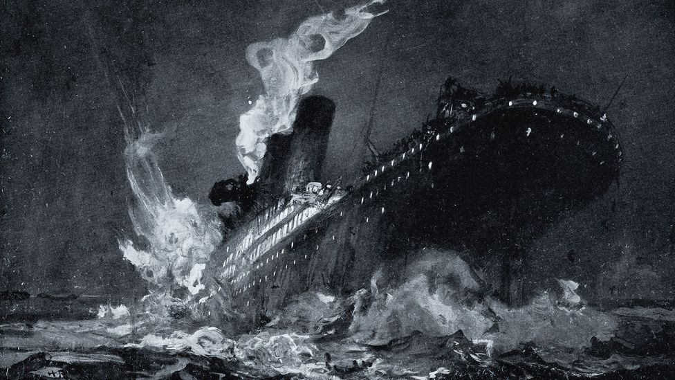
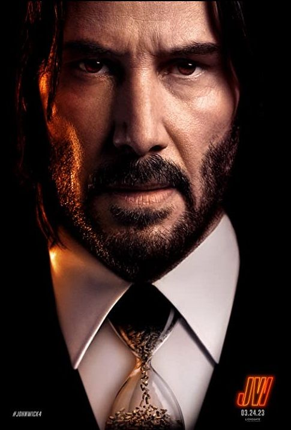

Kapal Titanic tenggelam pada tanggal 15 April 1912 setelah menabrak gunung es pada pelayaran perdananya dari Southampton, Inggris ke New York City1. Kapal ini mengangkut sekitar 2.224 orang ketika menabrak gunung es pada pukul 23:40 (waktu kapal) pada hari Minggu, 14 April 19122. Kapal ini tenggelam dua jam empat puluh menit kemudian pada pukul 02:20 hari Minggu, 15 April (05:18 GMT) dan mengakibatkan kematian lebih dari 1.500 penumpangnya2.
Aquaman and the Lost Kingdom adalah bagian dari DCEU. Cerita Aquaman and the Lost Kingdom yakni tentang Arthur Curry yang harus bekerja sama dengan saudaranya, yaitu King Orm (Patrick Wilson untuk menghentikan Black Manta yang menjadi ancaman besar bagi kehidupan Atlantis).
lack Manta di sekuel ini jauh lebih berbahaya pada Lost Kingdom ketimbang film pertamanya. Soalnya, dalam film keduanya nanti Black Manta akan memiliki teknologi lebih canggih serta menguasai energi gelap yang bikin kekuatannya melesat.

John Wick: Chapter 4 atau disebut juga John Wick 4 adalah sebuah film aksi bercampur neo-noir asal Amerika. Film ini merupakan lanjutan dari John Wick: Chapter 3 - Parabellum (2019), serta bagian keempat dalam seri film John Wick.
John Wick 4 masih berfokus pada sang tokoh utama yaitu John Wick seorang pria dingin yang memiliki masa lalu gelap. Sewaktu muda ia yang merupakan anak yatim piatu dibawa oleh seorang mafia Rusia dan dibesarkan sebagai seorang pembunuh bayaran.
pun menjadi orang yang sangat kejam hingga orang-orang di sekitarnya merasa hormat dan takut kepadanya. John Wick 4 akan melanjutkan jalan cerita film sebelumnya. Film ini sepertinya akan mengeksplorasi organisasi The High Table lebih dalam lagi.
